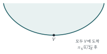

STEP III 1994, 문제 9
계속 읽기 전에 문제를 먼저 읽어 보자. 문제는 STEP Support Programme의 문제 데이터베이스에 있다: step.maths.org/questions/94-s3-q9
도입
그릇 안에서 구슬 두 개를 동시에 놓아 보자. 하나는 가장자리 근처에서, 다른 하나는 바닥 바로 위에서 놓는다. 어느 쪽이 먼저 바닥에 닿을까? 보통의 그릇에서는 대개 낮은 곳에서 출발한 구슬이 이긴다. 그런데 어디서 출발하든 두 구슬이 언제나 함께 도착하는 그릇이 있다. 그것이 바로 등시곡선(tautochrone)(그리스어로 “같은 시간”이라는 뜻)이며, 그 단면은 사이클로이드(cycloid), 즉 굴러가는 바퀴의 둘레 위 한 점이 그리는 곡선이다.
하위헌스(Huygens)는 1659년에 이 사실을 발견했고, 이를 이용해 진폭과 관계없이 주기가 일정한 진자시계를 설계하여 11.3 절에서 발견한 결점을 바로잡았다. 이 문제는 올바른 변수, 즉 수평 위치 대신 곡선을 따라 잰 거리를 택함으로써 등시성을 단 몇 줄 만에 증명한다.
시작하기 전에
그릇은 매끄럽다. 입자에 작용하는 힘은 무엇이며, 그중 어느 힘이 일을 하는가?
중력과 수직항력(normal reaction)이다. 수직항력은 곡면에 수직이고 따라서 운동 방향에도 수직이므로 일을 하지 않는다. 중력만 일을 하므로 에너지가 보존된다.
차근차근 풀기
단계 1 곡선을 따른 에너지
\(s\)가 호의 길이(arc length)이므로, 곡면을 따른 입자의 속력은 \(\bigl|\frac{\mathrm{d}s}{\mathrm{d}t}\bigr|\)이다. 에너지 보존에 의해 \(\frac12m\dot s^2 + mgy =\) 상수이므로 \(\dot s^2 + 2gy\)는 상수이다.■
단계 2 \(s\)에 대한 단진동
\(s = 2\sqrt{ky}\)를 이용해 \(y\)를 \(s\)의 함수로 바꾸어라. 그 결과 얻는 방정식은 어떤 종류의 운동을 나타내는가?
\(y = \frac{s^2}{4k}\)이므로 에너지 방정식은 \[\dot s^2 + \frac{g}{2k}s^2 = \text{상수} = \frac{g}{2k}s_0^2,\] 이 된다. 여기서 \(s_0 = 2\sqrt{kh}\)는 출발점의 호의 길이이다(입자는 정지 상태에서 출발한다). 미분하면 \(2\dot s\ddot s + \frac gk s\dot s = 0\)이므로 \[\ddot s = -\frac{g}{2k}\,s.\] 이것은 변수 \(s\)에 대한 단진동(simple harmonic motion)이며, 진폭과 관계없이 \(\omega^2 = \frac{g}{2k}\)이다. 즉 \(s = s_0\cos\omega t\)이다.
단계 3 바닥까지 걸리는 시간
입자는 주기의 4분의 1이 지난 후 \(V\)(\(s = 0\)인 점)에 도달한다: \[\frac{\pi}{2\omega} = \frac\pi2\sqrt{\frac{2k}{g}} = \pi\sqrt{\frac{k}{2g}},\] 이 값은 \(h\)에 의존하지 않는다.■
왜 이렇게 될까? 곡선을 따른 “복원력”은 \(g\)에 기울기를 곱한 \(g\frac{\mathrm{d}y}{\mathrm{d}s} = \frac{g}{2k}s\)이다. 즉 곡선을 따라 잰 바닥으로부터의 거리에 정확히 비례한다. 이것이 바로 단진동의 정의적 성질이다. 더 높은 곳에서 출발한 입자는 가야 할 거리가 더 멀지만, 그에 비례하여 더 세게 밀린다.
단계 4 두 입자
두 입자는 언제 \(V\)에 도달하며, 그때 속력은 얼마인가? 어느 쪽의 운동량이 더 큰가?
두 입자는 반대쪽에서 출발하여 같은 시각 \(T = \pi\sqrt{k/(2g)}\)에 \(V\)에 도달한다. \(V\)에서의 속력은 \(\omega\)에 \(s\)의 진폭을 곱한 값이므로 \(\sqrt{\text{높이}}\)에 비례한다. 높이 \(h\)에서 놓은 무거운 입자의 \(V\)에서의 속력을 \(U\)라 하면, 높이 \(\alpha^2h\)에서 놓은 가벼운 입자의 속력은 \(\alpha U\)이다. 두 입자의 운동량(momentum)은 서로 반대 방향으로 \(\alpha m \cdot U\)와 \(m \cdot \alpha U\)이므로, 크기가 같고 방향이 반대이다. 충돌 순간의 전체 운동량은 0이다.
전체 운동량이 0이고 반발 계수가 \(\alpha\)일 때, 충돌 직후의 속도는 어떻게 되는가?
운동량은 계속 0이므로, 충돌 후에도 두 입자는 크기가 같은 운동량을 가지고 서로 반대 방향으로 움직이며, 상대 속력은 접근 속력 \(\alpha U + U\)의 \(\alpha\)배이다(반발 계수(coefficient of restitution)의 정의). 가벼운 입자(질량 \(\alpha m\))의 속력을 \(w\)라 하면 무거운 입자(질량 \(m\))의 속력은 \(\alpha w\)이고, \(w + \alpha w = \alpha(1 + \alpha)U\)이므로 \(w = \alpha U\)이다. 각 입자는 속력이 \(\alpha\)배가 되어 튕겨 나간다. 질량 \(\alpha m\)인 입자는 \(\alpha U\)로, 질량 \(m\)인 입자는 \(\alpha^2U\)로 떠난다.
단계 5 전체 운동
이제 각 입자는 자기 쪽 곡면을 다시 올라가는데, 높이는 속력의 제곱에 비례하므로 도달 높이는 \(\alpha^2\)배로 줄어든다. 질량 \(\alpha m\)인 입자는 \(\alpha^2h\)까지, 질량 \(m\)인 입자는 \(\alpha^4h\)까지 올라간다. 등시성에 의해 두 입자는 시간 \(2T\) 후 정확히 같은 순간에 \(V\)로 돌아오며, 운동량은 다시 크기가 같고 방향이 반대이다. 모든 속력이 \(\alpha\)배가 된 채로 같은 충돌이 다시 일어난다. 따라서:
두 입자는 항상 \(V\)에서, 시각 \(T, 3T, 5T, \ldots\)에 충돌한다.
\(n\)번째 충돌 후 두 입자는 높이 \(\alpha^{2n}h\)와 \(\alpha^{2n+2}h\)까지 올라간다.
운동은 등비적으로 잦아들지만 결코 멈추지 않는다. 충돌은 무한히 많이 일어나며 영원히 계속된다.■

돌아보기
자연스러운 변수를 택하라. 호의 길이 \(s\)로 나타내면 운동은 정확히 단진동이다. \(x\)나 \(y\)로 나타내면 엉망이 된다.
에너지가 방정식을 준다. 에너지 방정식을 미분하여 운동 방정식을 곧바로 얻었다.
시간의 대칭성. 바닥까지 가는 데 걸리는 시간이 언제나 같으므로, 두 입자는 영원히 박자가 맞았고 충돌은 정확히 반복되었다.
숨은 수학
왜 사이클로이드인가?
직선 아래에서 굴러가는 반지름 \(R\)인 바퀴는 사이클로이드 \(x = R(t + \sin t)\), \(y = R(1 - \cos t)\)를 그린다. 그러면 \(\frac{\mathrm{d}x}{\mathrm{d}t} = R(1 + \cos t)\)이고 \(\frac{\mathrm{d}y}{\mathrm{d}t} = R\sin t\)이므로, 곡선을 따른 속력은 \(R\sqrt{2 + 2\cos t} = 2R\cos\frac t2\)이다. 적분하면 바닥으로부터의 호의 길이는 \(s = 4R\sin\frac t2\)이고, 한편 \(y = 2R\sin^2\frac t2\)이다. 따라서 \(s^2 = 8Ry\)이다. 즉 사이클로이드는 정확히 \(k = 2R\)일 때 \(s = 2\sqrt{ky}\)를 만족하는 곡선이다. 역으로, 복원력이 \(s\)에 비례해야 한다는 조건은 곡선이 사이클로이드일 것을 강제한다.
최단강하곡선
1696년 요한 베르누이(Johann Bernoulli)는 유럽의 수학자들에게 문제를 냈다. 한 점에서 그보다 낮은(바로 아래는 아닌) 점까지 구슬이 가장 짧은 시간에 미끄러져 내려가는 곡선은 무엇인가? 그 답인 최단강하곡선(brachistochrone) 역시 사이클로이드이다. 뉴턴(Newton)은 문제를 받은 뒤 하룻저녁 만에 풀었다고 전해진다. 그는 풀이를 익명으로 발표했지만, 베르누이는 “발톱을 보고 사자를 알아보듯” 저자를 알아보았다. 이 문제는 4.7 절에서 만난 변분법(calculus of variations), 즉 적분으로 정의된 양을 최소화하는 곡선을 찾는 분야의 출발점이 된 예이다.
하위헌스는 단진자의 주기가 진폭에 의존하기 때문에 단진자가 시간을 정확히 맞추지 못한다는 것을 알고 있었다. 그는 『Horologium Oscillatorium』(1673)에서 추가 사이클로이드를 따라 움직이게 하는 방법을 보였다. 사이클로이드 모양으로 휜 두 개의 “볼판” 사이에 줄을 매달면, 줄이 볼판을 감으면서 추가 스스로 사이클로이드를 그리게 된다(사이클로이드의 신개선(involute)은 또 다른 사이클로이드이다). 실제로는 볼판이 마찰로 일으키는 오차가 없애는 오차보다 커서, 시계 제작자들은 대신 진폭을 작게 유지했다. 그러나 하위헌스의 분석은 축폐선(evolute)과 신개선의 이론을 창시했고, 그의 책은 17세기 역학의 위대한 저작 가운데 하나가 되었다.
사고 기술
곡선을 따른 운동은 곡선을 따라 잰 거리로 나타낼 때 가장 단순한 경우가 많다. 방정식을 선형으로 만드는 변수를 찾아라.
대학에서는 이것이 라그랑주 역학(Lagrangian mechanics)의 일반화 좌표(generalised coordinates)라는 개념이 된다. 계의 배치를 나타내는 변수라면 무엇이든 쓸 수 있으며, 변수를 잘 고르면 풀 수 없던 문제가 풀리기도 한다.
더 도전하기
다른 높이. 등시곡선 그릇에서 높이 \(h\)에서 입자를 놓는다. \(V\)에서의 속력이 에너지 보존에 따라 당연히 그래야 하듯 \(\sqrt{2gh}\)임을 보이고, 이것이 \(\omega s_0\)와 일치하는지 확인하여라.
보통의 그릇. 반지름 \(R\)인 반구형 그릇에서, 낮은 높이에서 바닥까지 가는 시간과 가장자리에서 바닥까지 가는 시간을 비교하여라. 어느 쪽이 더 긴가? (11.3 절의 결과를 이용하여라.)
같은 질량. 질량이 모두 \(m\)으로 같은 두 입자를 높이 \(h_1\)과 \(h_2\)에서 놓고 반발 계수가 \(e\)일 때, 문제의 둘째 부분을 다시 풀어라. 두 입자는 여전히 항상 \(V\)에서 충돌하는가?
사이클로이드의 호의 길이. 사이클로이드의 한 아치의 길이가 \(8R\)이고, 그 아래 넓이가 굴러가는 원 넓이의 세 배인 \(3\pi R^2\)임을 보여라.
더 읽을거리
George Simmons, Differential Equations with Applications and Historical Notes (CRC Press). 등시곡선과 최단강하곡선을 그 역사와 함께 다룬다.
E. A. Whitman, “Some historical notes on the cycloid”, American Mathematical Monthly 50 (1943). 사이클로이드가 왜 “기하학자들의 헬레네”라고 불렸는지 설명한다.
Paul Nahin, When Least Is Best (Princeton University Press). 최단강하곡선을 비롯한 최적화 문제들을 역사와 함께 들려준다.